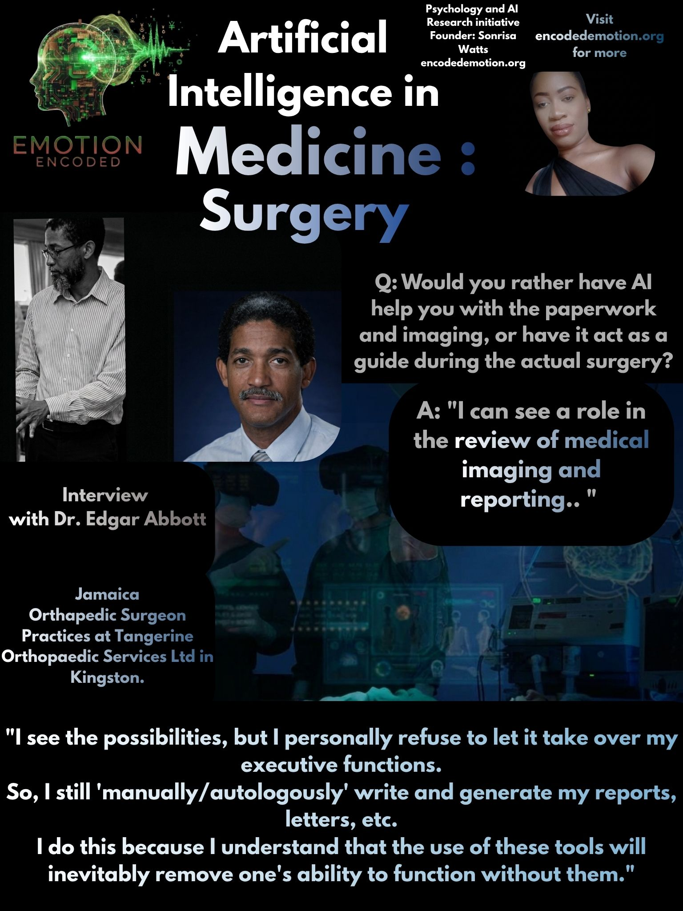

Dr. Edgar Abbott is an esteemed orthopaedic surgeon practicing at Tangerine Orthopaedic Services in Kingston, Jamaica. He is also the Creative Developer of JUST (Jamaica Underground Skills Tank), a dedicated skills lab and environment launched in September 2014. JUST provides medical professionals the space to learn and maintain technical expertise through hands-on experience with human and animal anatomical models and surgical simulators. I spoke with Dr. Abbott to examine the role of AI tools in high-stakes surgical and diagnostic environments.
Regarding his current engagement with technology, Dr. Abbott stated "No" to the use of AI tools like ChatGPT or Gemini. When asked about his trust in AI for diagnosis versus surgery, he clarified: "Not using AI. I do consider online references on management of selected topics."
When exploring potential roles for AI in his practice, Dr. Abbott distinguished between administrative support and clinical guidance: "I can see a role in review of medical imaging and reporting."
Looking toward the future, Dr. Abbott positions the technology as a "helpful tool as an adjunct." However, he maintains a strict boundary regarding his clinical autonomy: "I see the possibilities, but I personally refuse to let it take over my executive functions." He emphasized that he continues to "manually/autologously" write and generate his reports and letters noting: "more because I understand that use of these tools will inevitably remove one's ability to function without them.".
Summary
Dr. Edgar Abbott, an orthopaedic surgeon and founder of the JUST skills lab in Jamaica, maintains a cautious stance on artificial intelligence. While he acknowledges the potential for AI to assist with medical imaging and reporting, he avoids using generative AI tools to preserve his clinical autonomy and fundamental professional skills.
Sonrisa Watts // Emotion Encoded // 2026